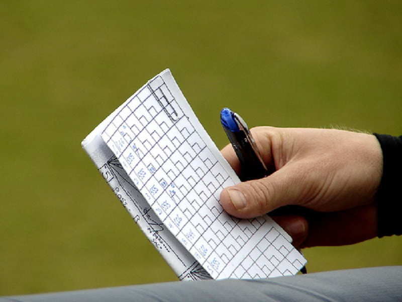
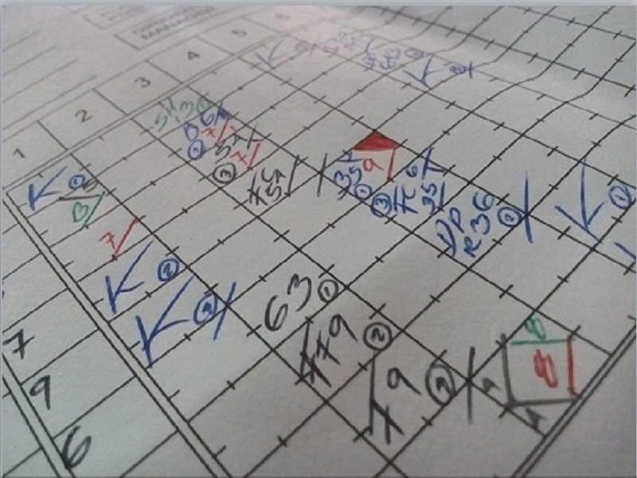
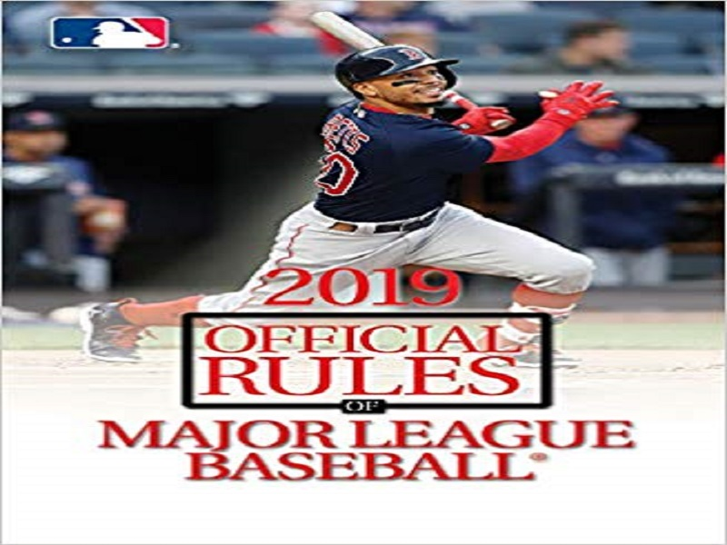
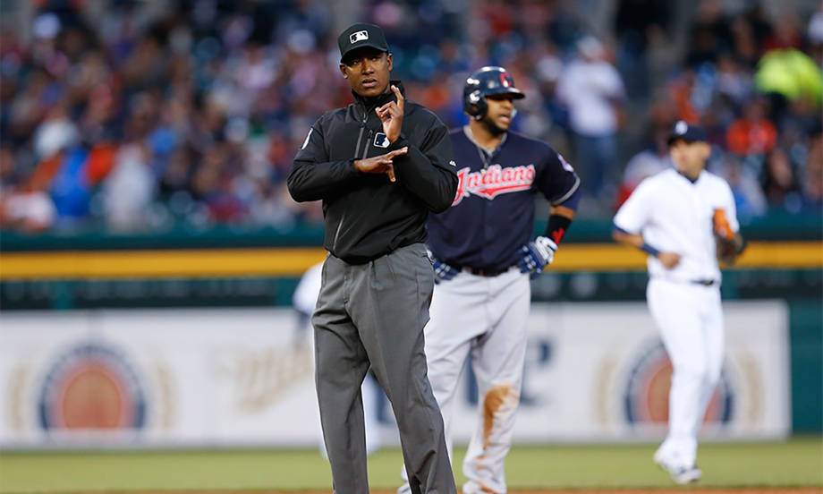
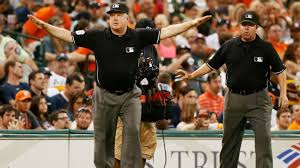
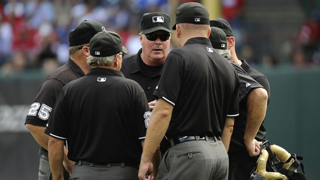
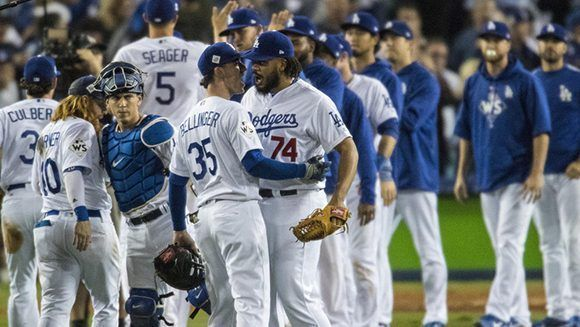
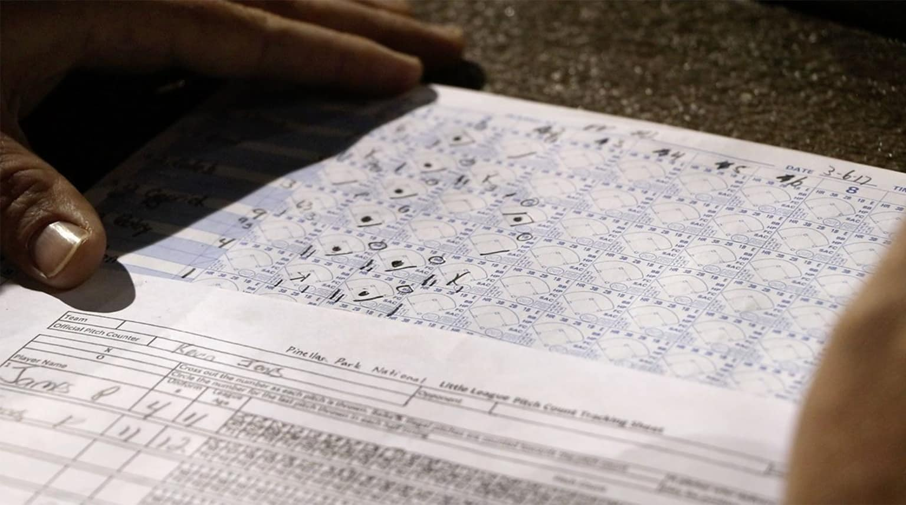

El Anotador Oficial de Béisbol
Es el encargado de llevar el registro de todas las jugadas de un juego de béisbol. Es la única autoridad que podrá tomar decisiones de criterio, tales como, indicar cuando una jugada es hit del bateador o error del defensor. Esta información es de carácter público, por lo tanto debe ser informada en cuanto está tomada la decisión.
- Responsabilidad en su trabajo, tiempo y organización.
- Honestidad y veracidad a la hora de tomar decisiones.
- Ética Profesional donde demuestre su personalidad.
- Sociable y humilde para aceptar el criterio de los demás.
Función de un Anotador
La función primordial del anotador oficial es de llevar la anotación completa de un juego de beisbol, usando una hoja adecuada proporcionada por la liga en la cual se lleven todos los registros individuales y colectivos de todos los jugadores que actúen en dicho juego, además sabiendo que su objetivo fundamental es determinar si un batazo es hit o error.
- Observar el juego desde una posición cómoda (Cabina Oficial).
- Comunicar las decisiones que impliquen juicios.
- Registrar todas las incidencias del juego en una hoja oficial.
- Realizar una cuadre con todas las estadísticas individuales de cada jugador al finalizar el juego.

Otras Funciones

Deberá realizar todas las decisiones oficiales dentro de las veinticuatro (24) horas después que un juego haya sido oficialmente concluido.
Ninguna decisión será cambiada después de esto, excepto, que el anotador puede hacer una petición inmediata al presidente de la liga para realizar un cambio, citándose las razones por la cual se originó.

En cualquier caso, al anotador oficial no le está permitido tomar una decisión la cual esté en conflicto con las reglas de anotación.

Si los equipos cambian de posición antes de que tres hombres sean puestos out, el anotador deberá informar inmediatamente al árbitro de la equivocación.

Si el juego es protestado o suspendido, el anotador tomará nota de la situación exacta en el momento de la protesta o suspensión, incluyendo la anotación, el número de outs, la posición de todos los corredores, y la cuenta de bolas y strikes sobre el bateador.

El anotador no adoptará decisión que esté en conflicto con las Reglas Oficiales de Anotación o con la decisión de un árbitro.

Final del juego
Después de cada juego, incluyendo forfeit y los juegos declarados terminados, el anotador preparará un informe, en un modelo ordenado por el presidente de la liga, registrando la fecha del juego, lugar donde fue jugado, los nombres de los equipos competidores y los árbitros, la anotación completa del juego, y todos los récords individuales de los jugadores, compilados de acuerdo con sistema especificado en estas Reglas Oficiales de Anotación.
El anotador no llamará la atención del árbitro o de cualquier miembro de uno u otro equipo, por el hecho de que un jugador esté bateando fuera de turno.
El anotador es un representante oficial de la liga y tiene derecho al respeto y a la dignidad de su cargo, y está garantizada su completa protección por el presidente de la liga.
El anotador reportará al presidente cualquier ofensa expresada por cualquier director, jugador, funcionario o empleado del equipo, en el curso de, o como resultado del desempeño de sus funciones.

Ligas de Béisbol
Te presentamos algunas de las principales ligas de Béisbol de todo el continente y el mundo que utilizan un sistema de anotación tanto manual como de aplcación de software y que brindan una gran gama de estadísticas a todos sus usuarios de todos los niveles.


Testimonials
De manera fundamental es importante destacar La función primordial del anotador oficial que es la de llevar la anotación completa de un juego de beisbol, y por consiguientes tenemos a varios de los anotadores de latinoamerica expresando su testimonio sobre lo que conlleva ser un anotador de Beisbol.
 “Para este trabajo se necesita de mucha concentración, no perder un lanzamiento. Ver, más la experiencia que uno tiene, le permite saber lo que está pasando.”
“Para este trabajo se necesita de mucha concentración, no perder un lanzamiento. Ver, más la experiencia que uno tiene, le permite saber lo que está pasando.”


Arturo Santo Domingo
Primer Latino; Anotador Oficial - MLB
El Anotador es el responsable de plasmar lo sucedido en el terreno de juego, su decisiones se harán historia y por lo tanto se requiere de mucha objetividad.

Gil Reyes
Anotador Oficial (LVBP)
Cumplir con esta labor es un inmenso privilegio para quienes sentimos pasión por este deporte, debido a que nos permite estar en contacto directo con el juego de beisbol y formar parte del mismo.

Francsico Baez
Anotador Oficial (DSL & LIDOM)
El anotador oficial es el responsable de registrar, evaluar y otorgar en cada acción durante el juego apegado a lo que le faculta la regla de Beisbol.

Milton E. Reyes
Anotador Oficial (LIDOM)
En el juego de Béisbol todas las partes son muy importantes pero no hay dudas que el anotador es una pieza muy importante en la historia de este juego.

Orlando Diaz
Presidente (DSL)
Call To Action
Duis aute irure dolor in reprehenderit in voluptate velit esse cillum dolore eu fugiat nulla pariatur. Excepteur sint occaecat cupidatat non proident, sunt in culpa qui officia deserunt mollit anim id est laborum.
Contact Us
Porque eres importante para nosotros y nos honra con saber que estas documentándote y actualizándote en querer ser un anotador de Beisbol o más bien como aficionado, aquí te dejamos nuestros contactos. Ponte en contacto con nosotros.